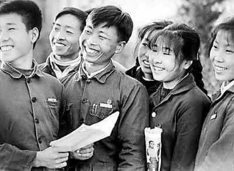
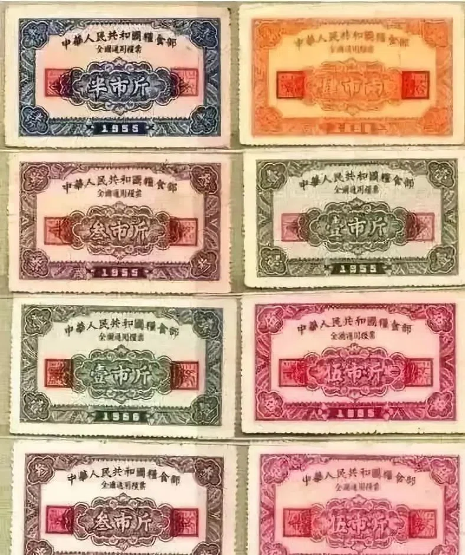
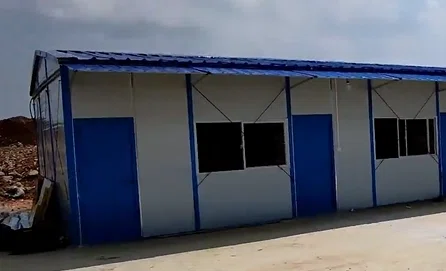
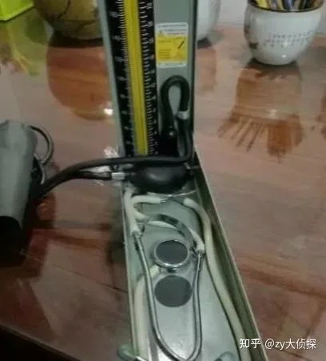

中国特色社会主义道路自信，就是坚信中国特色社会主义道路是实现社会主义现代化、创造人民美好生活的必由之路，是立足我国历史文化、国情实践走出来的正确道路。
近代中国尝试过改良主义、资本主义等各种道路，都没能救中国。新中国成立后，经过探索与总结，我们走出中国特色社会主义道路。
不是照搬外国模式，而是中国人民在长期奋斗中比较、选择出来的，符合中国历史与文化传统。
走这条道路带来了实实在在的发展成就：
坚持科学社会主义基本原则，同时不教条化，把马克思主义基本原理同中国具体实际相结合、同中华优秀传统文化相结合。
既坚持社会主义根本方向，又灵活适配中国国情，不是简单复制他国模式。
中国特色社会主义道路的目标，是实现中华民族伟大复兴，不断满足人民对美好生活的向往。
对比其他国家发展道路，这条道路可以在保持社会稳定前提下实现持续发展，为国家发展、人民幸福提供可靠路径。
这条道路，是实现民族复兴的唯一正确道路。
经济制度——回答“为什么这套制度能发展中国、造福人民”
这套安排既避免单一公有制的僵化，也防止私有化放任带来的两极分化风险，在方向稳定性和微观活力之间保持平衡。
按劳分配为主体，是防止两极分化、走向共同富裕的制度底线；多种分配方式并存，承认资本、土地、知识等要素按贡献参与分配，调动各方面积极性。
既让市场在资源配置中起决定性作用，又更好发挥政府作用。
政治制度——回答“为什么这套制度能保障人民当家作主、保持政治稳定”
人民代表大会制度是我国的根本政治制度。它的本质内核是人民当家作主，实现坚持党的领导、人民当家作主、依法治国有机统一。
它把协商而不是对抗作为政治过程主轴，把共识而不是票决竞争作为合法性重要来源。
基层群众自治制度让人民群众在基层党组织领导下依法直接行使民主选举、民主协商、民主决策、民主管理、民主监督的权利，进行自我管理、自我服务、自我教育、自我监督。
各少数民族聚居的地方实行区域自治，设立自治机关，行使自治权，保障少数民族当家作主、管理本民族内部事务的权利。既促进各民族共同团结奋斗，又推动各民族共同繁荣发展。
经济制度和政治制度都不是照搬别国模式，而是从中国革命、建设、改革实践中生长出来的。制度自信首先是适配性的自信。
制度好不好，最终看能否持续发展生产力、改善人民生活、维护社会安定。中国特色社会主义制度保障了经济快速发展和社会长期稳定，这种治理效能是制度自信最硬的依据。
经济制度提供发展动力与公平底线，政治制度提供秩序保障与参与渠道，共同构成制度自信的结构性支撑。
习近平总书记指出：文化自信是一个国家、一个民族发展中更基本、更深沉、更持久的力量。
理论自信是对中国特色社会主义理论体系的科学性、真理性、正确性的自信。
中国特色社会主义理论体系，包括邓小平理论、“三个代表”重要思想、科学发展观、习近平新时代中国特色社会主义思想。
这一理论体系是科学的，它体现了马克思主义的根本立场，贯穿了辩证唯物主义和历史唯物主义的世界观方法论，具有无可比拟的真理力量。
这一理论深刻回答了当代中国向何处去、社会主义向何处去等重大时代问题，推动中国实现从“赶上时代”到“引领时代”的跨越，是改变中国、影响世界的正确理论。
纵观世界政党发展史，没有哪一个政党像中国共产党这样如此重视理论创新，在实践基础上创造出如此系统丰富的科学理论，推动中华民族迎来了从站起来、富起来到强起来的伟大飞跃。
它不是僵化的教条，而是随实践不断发展的开放理论，习近平新时代中国特色社会主义思想作为其最新成果，实现了马克思主义中国化新的飞跃，持续开辟当代中国马克思主义的新境界。